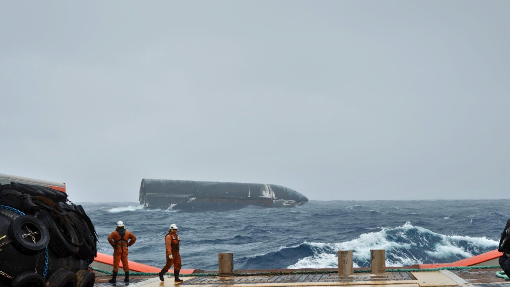

Sauvetage du Starship : SpaceX sort du silence avec de nouvelles images et une vidéo

L'actualité tech ne cesse d'évoluer. Nouveaux produits, acquisitions, découvertes : chaque jour apporte son lot d'informations importantes pour comprendre le monde numérique de demain.
Ce qu'il faut retenir
SpaceX est sorti d'un silence long de plusieurs jours pour donner à son tour des nouvelles de l'étage supérieur de sa fusée Starship.
Une prise de parole qui survient juste après la diffusion de clichés d'un photographe qui se trouvait dans les parages.
Pourquoi c'est important
Cette information pourrait avoir des répercussions sur tout le secteur technologique. Elle concerne directement les utilisateurs de technologies numériques et mérite d'être suivie de près dans les prochaines semaines. Sauvetage du Starship : SpaceX sort du silence avec de nouvelles images et une vidéo est ainsi un signal à prendre en compte pour comprendre les évolutions du secteur.
En résumé
Retenez l'essentiel : Sauvetage du Starship : SpaceX sort du silence avec de nouvelles images et une vidéo. Cette actualité a été rapportée par Numerama. Nous continuerons de suivre ce sujet et de vous tenir informés des prochaines évolutions.
Source : Numerama